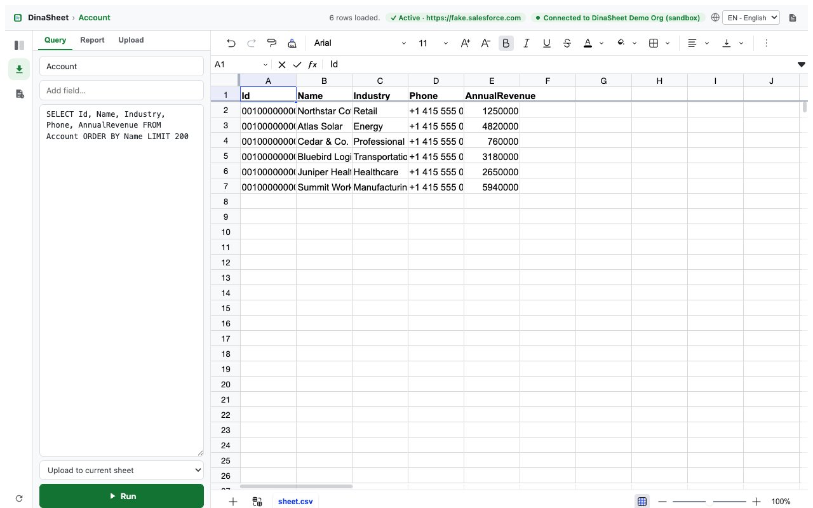
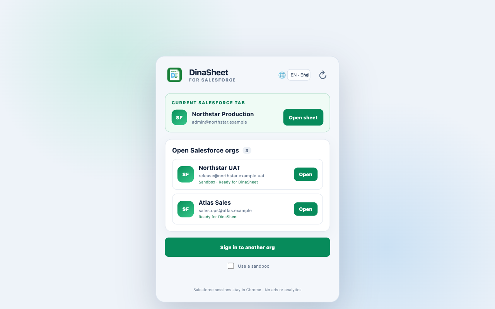
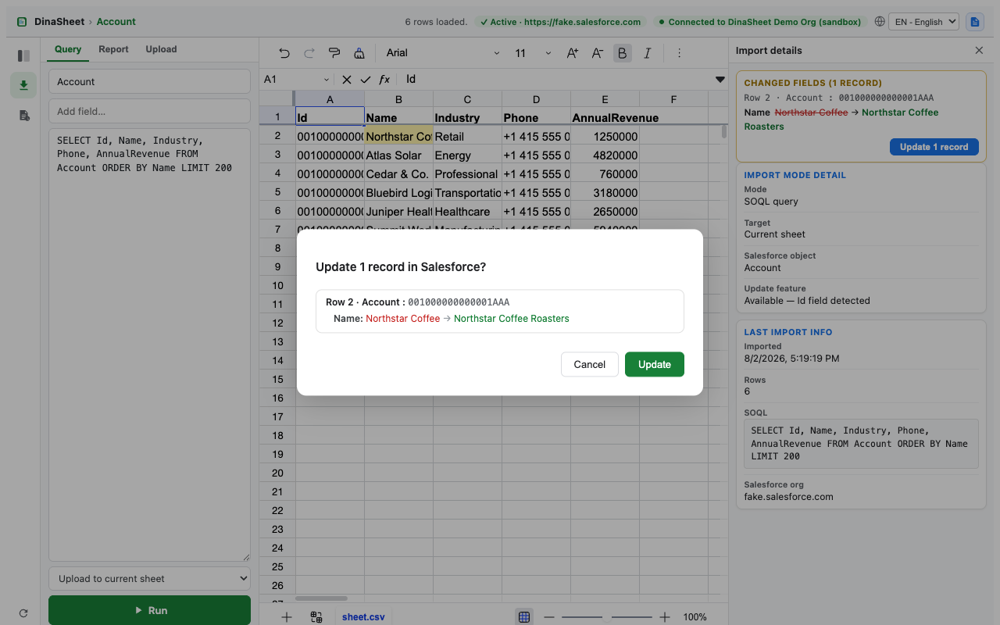
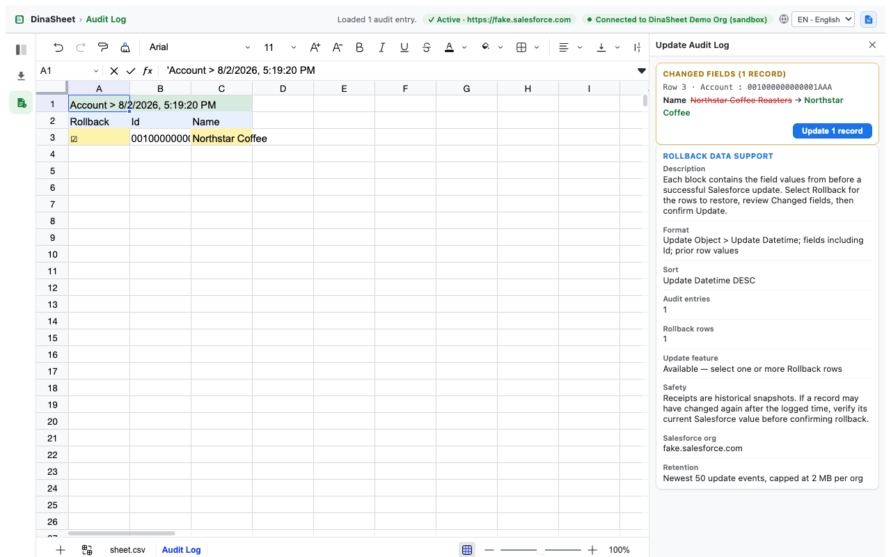
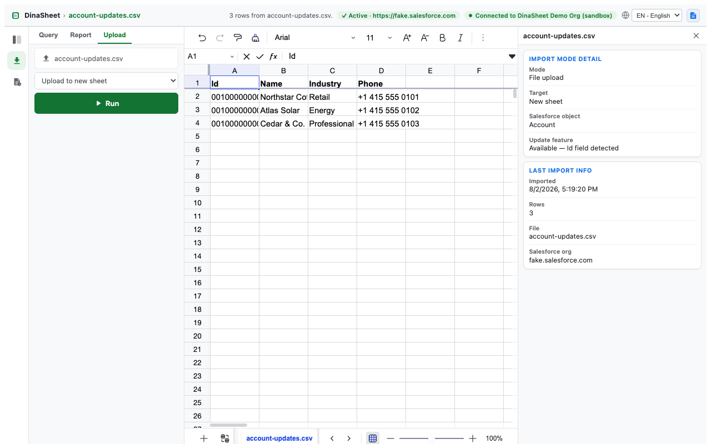
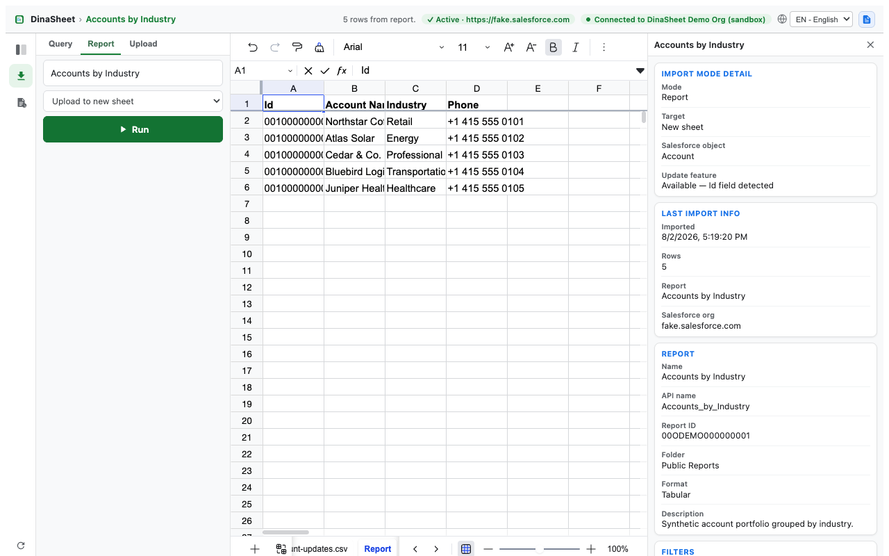

Org-aware launch
See the current Salesforce tab and other signed-in orgs before opening a sheet for the selected session.
A focused spreadsheet workspace for Salesforce data. Run SOQL queries and reports, import CSV or Excel files, edit supported records, and review exact changes before sending a confirmed update.
DinaSheet is an independent product and is not affiliated with, endorsed by, or sponsored by Salesforce.

See the current Salesforce tab and other signed-in orgs before opening a sheet for the selected session.
Run SOQL, browse objects, and open Salesforce reports in a familiar multi-sheet grid.
Open CSV and Excel files locally in the browser without uploading them to the developer.
Edit supported object fields inline with validation based on Salesforce schema information.
Inspect field-level before-and-after values and explicitly confirm selected rows before an update runs.
Review bounded per-org update receipts and prepare prior values for a separately confirmed rollback update.
Query an object, open a report, or select a local CSV or Excel file.
Edit supported rows and inspect every changed field in the review card.
Confirm the exact records and values before DinaSheet sends the update to Salesforce.





cookies: reads the existing Salesforce session cookie locally for user-requested API calls.storage: stores preferences and bounded per-org update receipts used for audit and rollback.Version 0.2.0 is a validated release candidate. The extension package and Chrome Web Store assets are prepared for submission.